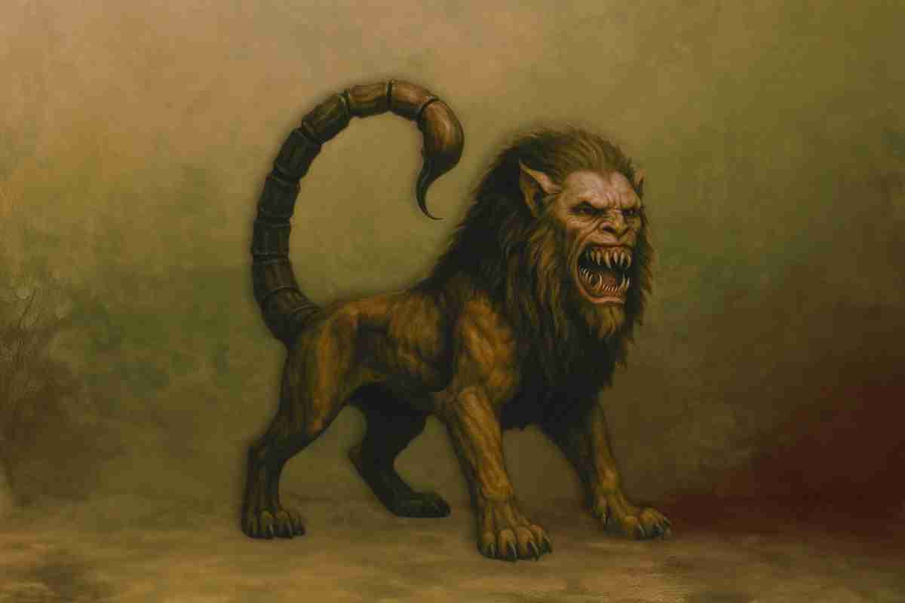
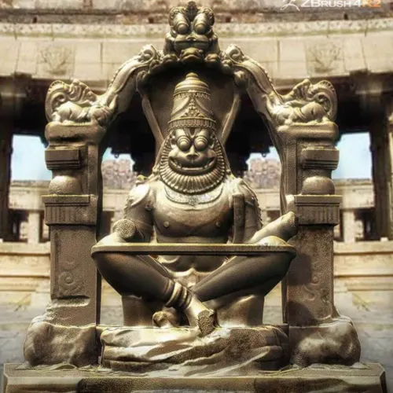
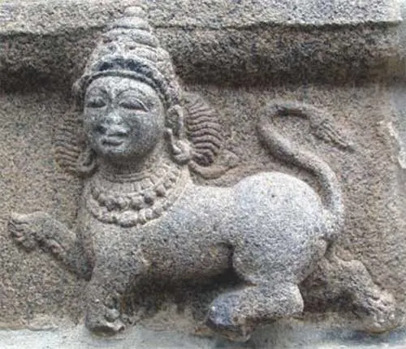
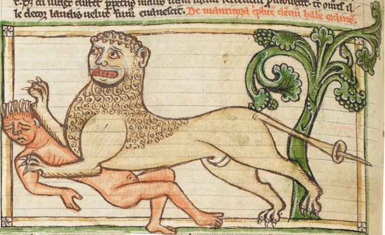
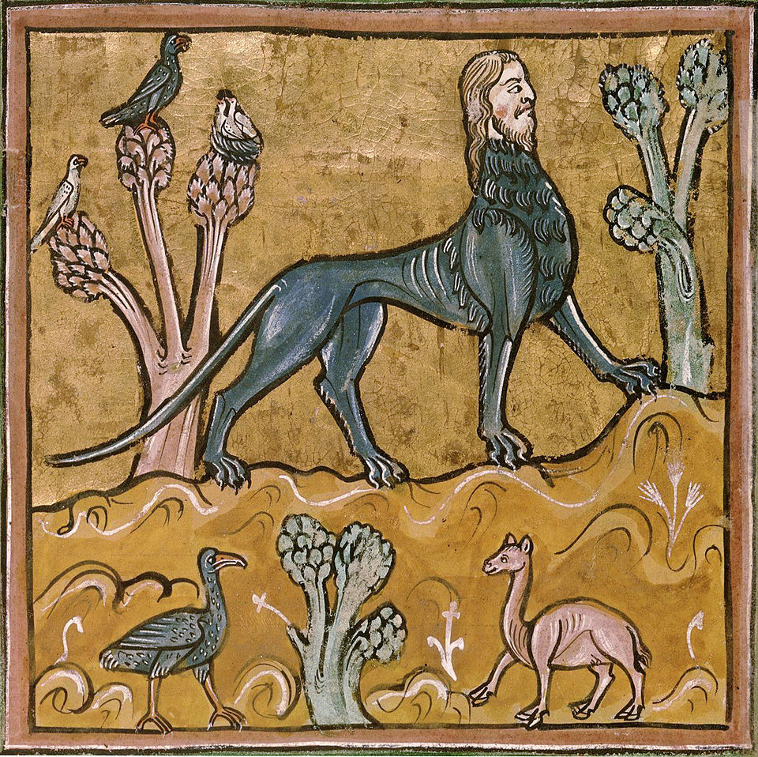
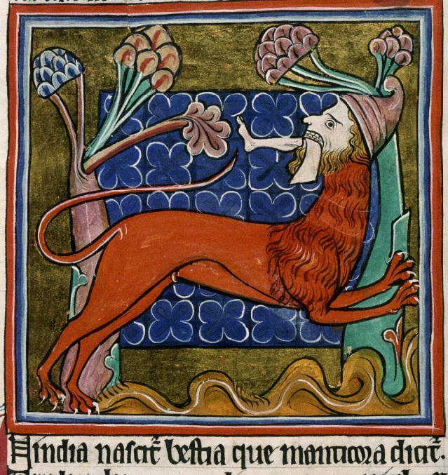
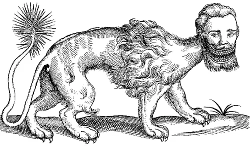
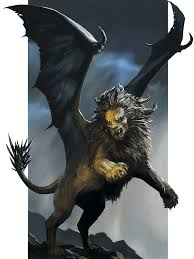
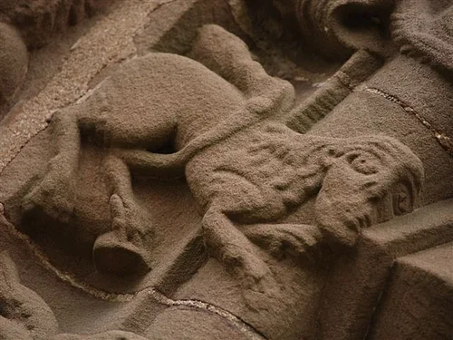

MANTICORE

Introduction
The roots of the Manticore lie in ancient Persian mythology, with its name deriving from the Persian word "Mardikhouran", meaning "Man-Eater" (from Martya "man" and Xvar "to eat"). First chronicled by the Greek physician Ctesias and later by Pliny the Elder in his Naturalis Historia, it was described as a terrifying predator that devours its prey whole. In modern RPGs, the Manticore is often portrayed not as a mindless beast, but as an apex predator with human-like intelligence. It is a creature that might engage you in sophisticated conversation while feasting on a half-eaten corpse, all while calculating how to make you its next course.
From its venomous quills to its leonine strength and eerie human visage, the Manticore remains one of the most chilling hybrids of ancient mythology. Feared throughout legends and kingdoms, this monstrous myth blends the worst traits of predator and human, cementing its status as a pinnacle of fictional horror. Whether viewed as a feral lion or a distorted, undead beast of the wild, this legendary monster continues to lurk on the fringes of urban legends and forgotten forests, embodying a power that rejects the light of consciousness in favor of "Sovereign Shadow."
History
The Manticore is a legendary hybrid creature featured in the mythologies of Mesopotamia, Ethiopia, and India. Also known as the "Martichora," "Mancomorion," or "Satyral," it was a favored staple in medieval European bestiaries. Its name is derived from the Old Persian "Mardykhor", meaning "Slayer of Men," leading some scholars to speculate that the myth may have originated from encounters with man-eating tigers. The earliest classical accounts trace back to the Greek physician to Artaxerxes II (404–359 BC), later preserved by the Roman author Aelian and referenced by Pliny the Elder in his Natural History (77 AD), cementing the Manticore as an enduring symbol of lethal hybridity.
HINDUISM
In India, there is a wild beast—powerful, daring, and as large as the grandest lion. Its color is a vivid red like cinnabar, and it is shaggy like a dog; in the Indian tongue, it is called Martichoras. Its face is not that of a beast but of a man, featuring three rows of teeth in each jaw, sharper and larger than those of a hound. While its ears and blue-grey eyes resemble a human’s, its feet and claws are those of a lion. At the end of its tail is a scorpion’s sting, over a cubit long, capable of discharging stings like arrows over great distances. Ctesias asserts that these stings regrow once launched, creating a "crop of evil." The creature takes special delight in gorging on human flesh, a trait from which its Greek name, "Man-eater," is derived.
In order to halt the manticores' aggressive nature, the Indians would hunt baby manticores and smash their tails with rocks. This preventive measure was designed to stop them from growing and developing the ability to shoot their poisonous darts, effectively stripping them of their power to harm humans from a great distance. Manticores dwelt in burrows deep underground, where they could remain concealed from their prey and avoid human detection, acting as a "hidden sovereignty" that lurked in the shadows, awaiting the perfect moment to strike.

The Hindu god Narasimha is often referred to as a Manticore. Narasimha, the man lion, is the fourth avatar of Vishnu and is described as having a man’s torso and the head and claws of a lion.
Some bloggers and mythology enthusiasts have suggested that the Manticore may have been partly inspired by Narasimha (the lion-man avatar of Vishnu), especially since Ctesias based his description on accounts from India and the East. However, this connection is largely considered speculative and lacks strong historical evidence. While Narasimha represents a divine incarnation of justice and protection sent to destroy evil, the Manticore is consistently portrayed as a predatory beast lurking in the shadows to devour humanity. It is a contrast between the "Sacred Lion" and the "Profane Beast" within the collective memory.

In Indian architectural art (notably in the Chola and Vijayanagara temples of South India), the Purushamriga (meaning "Human-Beast") emerges as a hybrid entity with a human head and a lion's body, sometimes featuring leopard-like feet. While it shares physical similarities with the Manticore, the difference lies in its "Sovereign Frequency"; whereas the Manticore is depicted as a predatory and malevolent devourer of men, the Purushamriga is revered as a sacred guardian of the temple. It embodies "Tamed Power" that protects holy thresholds and repels negative energies, serving as a symbol of spiritual sovereignty that maintains order and sanctity.
ETHIOPIANS
Ctesias informs us that among these Ethiopians, there exists an animal he calls the Mantichora. It possesses a triple row of teeth that interlock like those of a comb, the face and ears of a man, and azure eyes. Of the color of blood, it has the body of a lion and a tail ending in a sting, much like that of a scorpion. Most hauntingly, its voice is said to resemble the union of the sound of the flute and the trumpet. It is of excessive swiftness and harbors a particular fondness for human flesh.
Pliny introduced a controversial notion regarding the Manticore's existence in Africa, discussing it within the context of Ethiopia alongside creatures like the Yale. Most intriguingly, he linked the Manticore with the Crocotta; while the Crocotta was renowned for mimicking human sounds, Pliny (citing Juba II) claimed that the Ethiopian Manticora could also imitate human speech. He described its voice as a haunting hybrid resembling a "shepherd’s pipe" (fistula) blended with the resonant blast of a "trumpet." This makes the creature a biological "transmitter," capable of infiltrating human consciousness through familiar and sacred tones.
EUROPE
In the Middle Ages, the Manticore assumed a symbolic theological dimension through its association with the prophet Jeremiah; as the beast was believed to dwell deep within the earth, Jeremiah was cast into a miry pit. Simultaneously, the Manticore became an embodiment of "Tyranny, Disdain, and Envy," serving as a personification of evil. This folk terror persisted into the 1930s, with Spanish peasants still regarding it as an "Omen of Misfortune." The creature remained obscure outside occult circles until 1956, when Gian Carlo Menotti brought it into the modern Western spotlight with his ballet The Unicorn, the Gorgon, and the Manticore.
DESCRIBED
In most instances, the manticora is depicted as "coloured red or brown with clawed feet." However, artists occasionally took the liberty of coloring the manticore blue. One notable example portrays the creature as a "long-haired blond," while another features a striking combination: the face of a woman joined to the body of a blue manticore. This chromatic and figurative diversity reflects ancient attempts to visualize "hybrid consciousness," where human beauty—embodied by blond hair or a feminine face—merges with predatory ferocity and a blue hue that may symbolize "cold calculation" or "cosmic mystery."
According to the accounts preserved by Photius and Aelian, the "Martichora" was a blue-eyed, human-faced beast of India, the size of the largest lion, with fur the color of cinnabar. Beyond its triple row of teeth, its true power lay in its scorpion-like tail, featuring a terminal sting over a cubit long, flanked by auxiliary stings each a Greek foot in length. These stings were instantly fatal and could be launched like projectiles sideways, forward, or backward—reaching a range of one plethron—with the remarkable ability to regenerate after firing. Only the elephant was immune to its toxin, and it could overcome every beast except the lion.
In his monumental work The Historie of Foure-Footed Beastes (1607), Edward Topsell dedicates a section to the Manticore, drawing from Aristotle and Ctesias. He describes it as an Indian beast with a lion's body, a human face, human ears, and grey eyes. The most chilling feature is the "treble row of teeth" beneath and above, exceedingly sharp and powerful. Topsell literally states that these teeth enable the creature to devour its victim so completely that not even a single bone remains. Here, the Manticore is portrayed as a biological "black hole," where everything vanishes within its interlocking jaws.

According to Pliny, the Manticore possesses three rows of teeth, the face and ears of a human, and striking blue eyes. It is characterized by its red fur, the powerful body of a lion, and a tail armed with the lethal stinger of a scorpion. It is also a creature of extraordinary speed, driven by an avid and relentless pursuit of human flesh. To Pliny, the Manticore represented the ultimate apex predator—a terrifying fusion where human cunning meets leonine power and scorpion-like lethality.
The prominent teeth and strange call of the manticore caused some classical and early modern writers to compare it to the African hyena. While its long tail and speed made others think it was more like a cheetah. The fearsome nature of the creature and its love for human flesh may have simply represented the fear of that which was unfamiliar and foreign.
In the final pages of The Temptation of Saint Anthony, Gustave Flaubert delivers a haunting portrayal of the Manticore: a gigantic red lion with a human face and triple rows of teeth, its crimson coat shimmering amidst the glare of the vast sands. The beast proclaims its lethal sovereignty: "I spit forth plagues.. I devour armies when they venture into the desert." Flaubert vividly depicts the "radiant arrows" launched from its tail in every direction—right, left, forward, and backward—resembling an explosion of toxic light that leaves no sanctuary for any living soul.
In his writings, Aelian describes the Manticore as possessing a unique and terrifying vocalization; its voice is said to resemble "the sound of a trumpet or a pipe." Other accounts depict it as a majestic yet horrifying blend of a "human voice and a lion’s roar." This hybrid frequency was far from accidental; the Manticore utilized it as a tool of deception to lure prey—who might mistake the sound for a human call—or as an instrument of sonic terror to paralyze its victims, establishing the beast as a master of auditory manipulation.

The Rochester Bestiary (13th century) provides a vivid description and illustration of the Manticore on folio 24v. Synthesizing the legacies of Pliny and Ctesias, it depicts an Indian beast with a leonine body, a human face, and a scorpion-like tail armed with poisonous spines. It is described as extremely swift, capable of leaping vast distances, with a "trumpet-like" voice that strikes terror. Its most formidable trait remains the "three rows of sharp teeth," enabling it to consume victims entirely—leaving behind neither bones nor clothing—effectively erasing the "physical signature" of its prey.

The MS. Bodl. 764 (c. 1226–1250 AD) is one of the most exquisite English bestiaries. On folio 25r, the Manticore is depicted in a striking blood-red hue with piercing grey eyes, featuring a bearded human head and a powerful leonine body. The text identifies it as a relentless man-eater (Anthropophagos), equipped with three rows of sharp teeth that allow it to swallow victims whole (Devorat homines integros), leaving no trace of bone. The vibrant miniature dramatically captures the beast devouring a human leg, blending high medieval artistry with existential terror, accompanied by a voice like a "trumpet blast."
Theories
Alternative history proponents argue that these creatures are not local inventions, but rather symbolic remnants of a "highly advanced pre-diluvian civilization" (such as Atlantis, Mu, or a lost prehistoric empire). This civilization was global, which explains why these hybrid symbols are dispersed across the world: the Sphinx in Egypt, the Lamassu in Mesopotamia, and the Manticore in Persia and India. The hybrid form—combining human, lion, and sometimes avian or scorpion traits—serves as a "shared symbolic and technical blueprint" that was inherited by later cultures following the collapse of that ancient global order.
Some fringe theorists argue that hybrid entities like the Manticore, Lamassu, and Sphinx were not mere artistic symbols, but actual genetically engineered beings or prehistoric creatures. According to this perspective, these hybrids were created for specific functional roles: serving as guardians of sovereign sanctuaries and temples, or as protectors of energetic portals (Vortexes/Star-gates). The fusion of human intelligence, leonine strength, and avian speed (or scorpion lethality) created a "biological defense system" capable of interacting with the electromagnetic frequencies of sacred sites, barring those whose frequencies were not aligned from entering.
The Manticore is thought to have its origins in ancient India and Persia. While some sources link its birth to Persian mythology, others maintain its status as an Indian creature. According to Aelian in his Characteristics of Animals, "Ctesias claims to have seen one such creature which was brought to the Persian king as a gift." Other writers reinforce this claim, stating that although Ctesias first encountered the beast in Persia, it had originally hailed from India. Thus, it is perhaps most accurate to conclude that the Manticore originated within Persian literature but was depicted as a staple of Indian mythology.
During the Middle Ages, the Manticore was a staple feature of bestiaries. It frequently appeared as a decorative element in medieval cathedrals, symbolizing the Hebrew prophet Jeremiah and his prophecies of doom. By the 16th century, manticores occasionally surfaced in heraldry; however, this trend was short-lived as they were widely perceived to represent pure evil, a conviction that was prevalent throughout the medieval period.
In some studies and books on the map (such as The Bestiary on the Hereford World Map), the manticore is mentioned in a very close context (in the Asia region), and the manticore actually appears on the map alongside other mythical animals.
Some sources say that there is a fresco in Ronkelstein Castle (or Castel Roncolo in Italian, in South Tyrol near Bolzano, Italy) depicting one of King Arthur’s knights facing a manticore and another animal (often described as a lion or tiger/leopard).

During the 13th and 14th centuries, the manticore is mentioned in several romance books about Alexander the Great (r. 336-323 BCE), in which manticores and other fearsome beasts attacked his army during their campaigns.

In contemporary portrayals, the Manticore maintains a formidable presence in fantasy games and literature. It appeared in the earliest edition of Dungeons and Dragons (1974) and the trading card game Magic: The Gathering (1993). In Rick Riordan’s Percy Jackson and the Olympians, the antagonist Dr. Thorn can shapeshift into a manticore with a deadly tail. Even literary figures like Salman Rushdie feature the beast in the opening of The Satanic Verses. In J.K. Rowling’s Harry Potter series, Hagrid cross-breeds a manticore with fire crabs to create the "Blast-Ended Skrewts." Interestingly, not all depictions are vicious; in E. Nesbit’s The Book of Dragons, a manticore is portrayed as a shy, gentle creature seeking escape from a bestiary.

The heraldic manticore profoundly influenced Mannerist representations of the sin of Fraud, often envisioned as a monstrous chimera masked by a beautiful woman's face. A prime example is found in Bronzino’s celebrated allegory, Venus, Cupid, Folly, and Time, and more broadly within the decorative tradition of the grotteschi (grotesque). This imagery migrated through Cesare Ripa’s Iconologia, eventually shaping the 17th and 18th-century French conception of the Sphinx, where the beast became a sophisticated symbol of deadly deception hidden behind a veil of beauty.